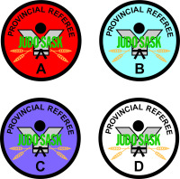

Upcoming Events:
- 2019 Referee Seminar-Back to Basics-- November 15-16, 2019 in Watrous, SK
Friday Nov 15th, 6:30 – 8:30pm--On mat session (wear your judogi), Watrous Elementry School—602 Main St, Watrous
Saturday Nov 16th, 9:00-11:00am--classroom session, Winston High School —202 6th Ave E, Watrous
Recent Promotions
JudoSask Provincials: 2019 March 31st
- Levi Couzens --Provincial C
- Sahara Kaip—Provincial C
- Cyrus Kaip—Provincial C
- Thomas Kehrig— Provincial C
- Eldon Li--Provincial C
- Kristian Heinrichs—Provincial D
- Emily Snook—Provincial D
- Thomas Huang—Provincial D
- Matthew Huang—Provincial D
- Houman Alimardani—Provincial D
Edmonton International: 2019 March 10th
- Maxx Karaim—National A
Recent Selections
Ontario Open. Toronto, Ontario. November 9-10, 2019
- Ross Kostron
Quebec Open. Montreal, Quebec. November 2-3, 2019
- Robb Karaim
- Kim Bergey Kaip
- Maxx Karaim
- Robb Karaim
PJC Cup 2019. Panama. May 25, 2019
- Robb Karaim
Canadian National Championships May 16-19, 2019
- Robb Karaim
- Kim Bergey
Judo Saskatchewan Active Referees
Last Updated 2019 September 18
IJF B Continental
- Robb Karaim, Regina Y Judo Club (2014)
National A
- Dale Berglund, Bengough Kokoro-e Judo Club (1995)
- Kim Bergey-Kaip, Avonhurst Judo Club (2016)
- Ross Kostron, Avonhurst Judo Club (2016)
- Maxx Karaim, Regina Y Judo Club (2019)
National B
- Jim Wiens, Moose Jaw Koseikan Judo Club (2016)
- Dean McGarry, Lloydminster Judo Club (2018)
- Lorna Hattum Snider, Avonhurst Judo Club (2018)
National C
- Jack Karaim, Regina Y Judo Club (2017)
Provincial A
Provincial B
- Russ Burton -- Regina Y Judo Club (2019)
Provincial C
- Levi Couzens -- Avonhurst Judo Club (2019)
- Sahara Kaip -- Avonhurst Judo Club (2019)
- Cyrus Kaip -- Avonhurst Judo Club (2019)
- Thomas Kehrig -- Avonhurst Judo Club (2019)
- Eldon Li -- Regina Y Judo Club (2019)
Provincial D
- Ghrandozz Aguilar—Swift Current (2019)
- Kristian Heinrichs—Avonhurst (2019)
- Emily Snook—Avonhurst (2019)
- Thomas Huang—Regina Y (2019)
- Matthew Huang—Regina Y (2019)
- Houman Alimardani—Regina Y (2019)
|
Becoming a Referee
Provincial Referee Pathways
National Referee Pathways
Referee Activity Levels
National Referee Exam Application Form

Rules and Regulation
IJF Refereeing Rules
Explanatory Guide to IJF Refereeing Rules effective Mar 9, 2018
Ne-waza Competition Rules
Guidance of Judogi Control
|

{kind=link}